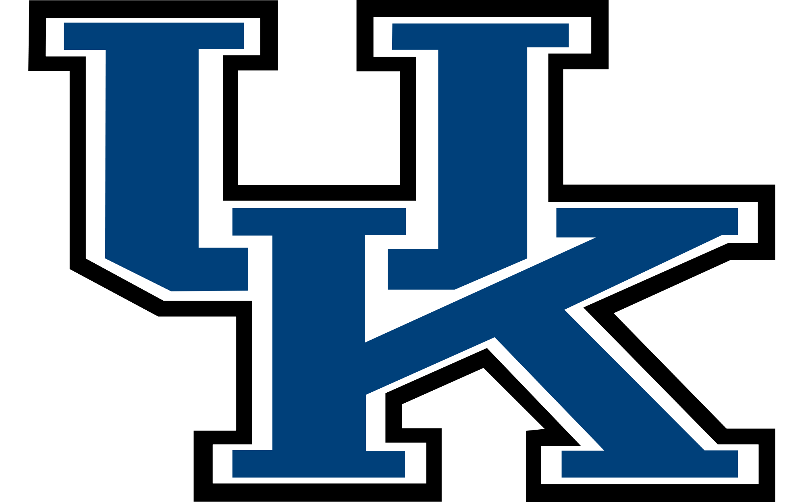

Sarah Klein Anderson
Experience
2015 - Present: DAS_Group, Remote
Contract Copywriter
- Create original copy for websites blogs in a variety of tones, using strong spelling and grammar.
- Research a myriad of topics for different client industries, as well as organize and integrate useful statistics from credible online sources.
- Familiarity with keyword placement, tools and other SEO best practices.
Sep. 2017 - Feb. 2018: Chevron, Louisville, KY
Contract CSR
- Accountable for order management and for building lasting relationships with customer accounts.
- Responsible for addressing customer requests/issues that arose in the order fulfillment process.
- Managed problem resolution efforts within SLA deadlines.
2015 - 2017: SkuVault, Louisville, KY
Executive Assistant to the CEO / Systems Admin.
- Customized and managed the Company CRM, (Zoho CRM), hosting and securing all internal data. Oversaw systems and user policies within the organization and within the office; recommending changes as appropriate.
- Managed monthly budgets and monthly metrics reports. Proficient in MS Word and Google Suite ; Performed filtering and sorting of data, V-lookup and other functions in Excel.
- Prepared and modified training documents, including new and existing company policies and procedures, reports, memos and emails. Stood in as HR assistant, created interactive/embedded flow charts and forms with universal templates for the new hire on-boarding process.
- Managed and maintained executive schedules, including scheduling travel and conferences.
- General office management; Anticipated office and executive team needs; evaluated new office products. Ensured operation of office equipment; ordered maintenance as needed. Maintained inventory for office groceries/supplies. Coordinated/managed volunteer efforts with Safe Place and Day Spring. Greeted visitors, managed phones and directed to appropriate executives and parties.
Executive Copywriter/Editor
- Developed creative concepts and campaigns in partnership with the creative director; presented ideas and outcomes to the executive team.
- Liaised with partners and target audience to learn/interpret market needs. Familiarized with client products and services and competitor activities. Redeveloped adverts and campaigns in response to feedback from the creative director and potential clients.
- Created clear, persuasive, original copy (website, partnership proposals etc.). Updated digital media; created/managed social media outreach strategies. Proofread copy to check spelling and grammar (outgoing documents).
Systems Experience
Achievements, Skills and Foreign Language
- 2017 January: Extra Mile Program Award Winner (SkuVault -for strong work ethic and team spirit)
- 2016 February: Employee of the Month (SkuVault -for exceptional attitude)
- 2010: Microsoft Word and PowerPoint Certifications Completed
- 2007 - 2011: University of Kentucky 4-year Academic Scholarship
- 2007: International Baccalaureate (IB) Certificate, Sacred Heart Academy
- 2007: Kentucky Commonwealth Diploma
- 2006-2007: Spanish National Honor Society; (Spanish comprehension, speech/reading/writing)
- 2005: Governor School for the Arts Honoree, Creative Writing Program
Education

- B.A., Sociology. School of Arts and Sciences
- Background in Business and Creative Writing.
- GPA: 3.14